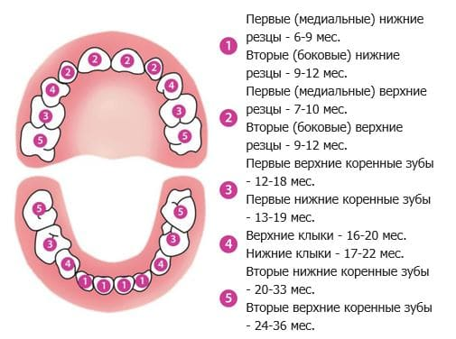

Существует народная примета: если у ребенка активно побежали слюни – значит, скоро полезут зубы. Мой личный опыт эту мудрость не подтверждает. С двух-трех месяцев слюни бегут у всех, а зубы появляются, как правило, после шести.
Время появления зубов (при нормальном питании и уходе) зависит, главным образом, от наследственности – разумеется, в определенных пределах. Нет никаких оснований для беспокойства, если все абсолютно нормально, ребенку девять месяцев, а зубов нет.
И еще один момент. Медицинская наука считает, что прорезывание зубов очень редко сопровождается развитием болезненного состояния. Но и практикующие врачи (автор в том числе), и подавляющее большинство родителей сплошь и рядом наблюдают, как у, казалось бы, здорового ребенка вдруг ни с того ни с сего портится настроение, повышается температура, иногда начинается понос. А через два-три дня прорезывается зуб, и все проходит.

Е.О.Комаровский. "Здоровье ребенка"